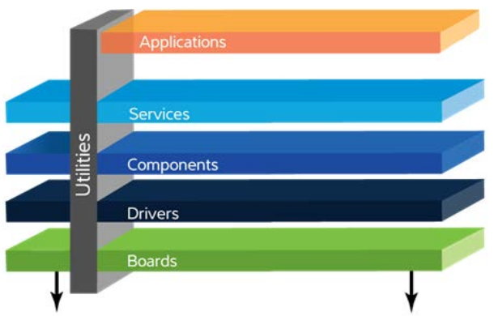

ASF (Advanced Software Framework) is a reusable embedded software framework for Atmel/Microchip MCUs.
It provides drivers, services, middleware, board support, and application examples to speed up evaluation, prototyping, and production firmware work.
What ASF Provides
- Low-level peripheral drivers (USART, SPI, TWI, ADC, TC, PWM, etc.)
- Common services (IOPORT, GPIO, delay, serial, clock helpers, and others)
- Board support files and ready-to-build example projects
- CMSIS/device headers and register definitions for supported SAM devices
ASF Layer Model

ASF software layers
Typical ASF projects are organized in these layers:
- Applications: end-user firmware logic and product features.
- Services: reusable higher-level software blocks used by applications.
- Components: support for external hardware blocks (display, memory, codecs, etc.).
- Drivers: low-level MCU peripheral access (USART, SPI, TWI, ADC, timers, ...).
- Boards: board-specific pin, clock, and peripheral mappings.
- Utilities: shared helpers/macros/common infrastructure used across modules.
Repository Layout (High Level)
- sam/: SAM device drivers, boards, utils, services, and applications
- common/: cross-platform services/utilities used by multiple families
- thirdparty/: bundled third-party middleware/components
- avr32/, mega/, xmega/: ASF content for other MCU families
Documentation Sources
Notes
This documentation set is a curated subset focused on SAM4SD32/SAM4S-EK2. Some ASF references point to legacy Atmel URLs, but module source comments remain the primary reference for API and usage.
{kind=link}
 1.16.1
1.16.1